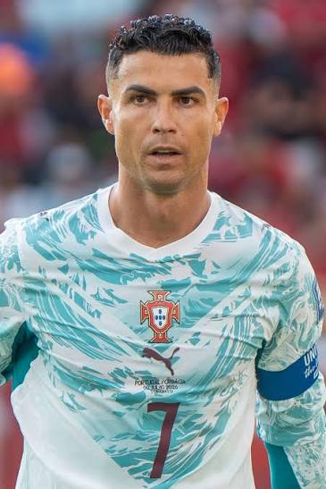
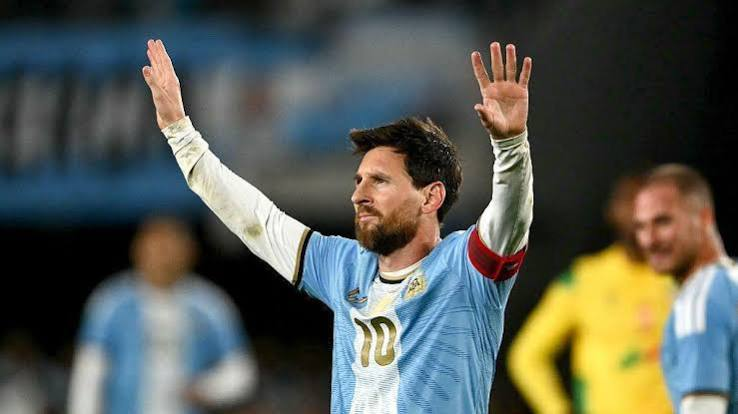
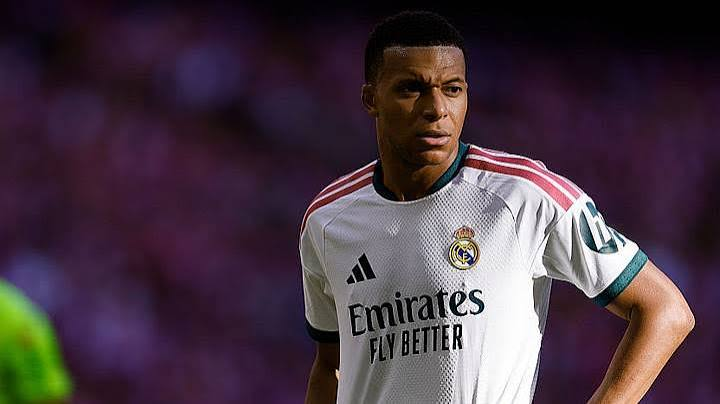
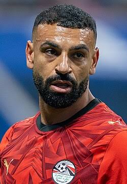
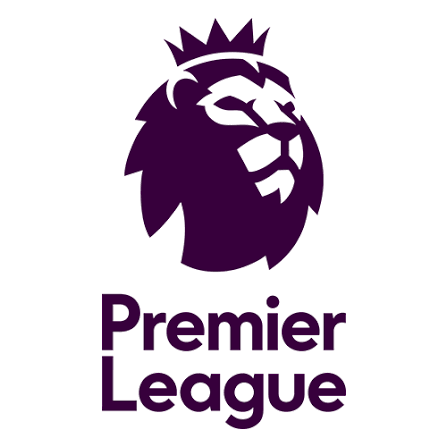
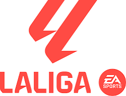
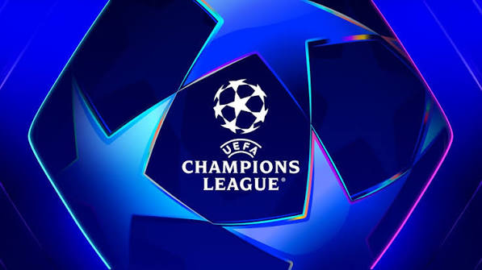
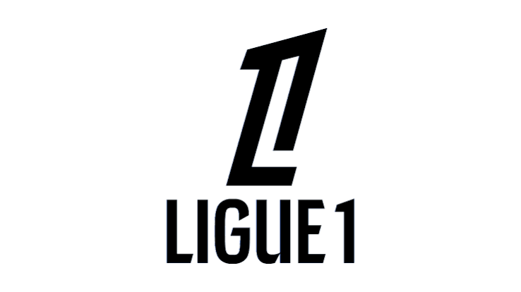

Argentina 1-2 Uruguay
Friendly international fixture, November 2026.
The definitive destination for real-time football coverage. From the tactical battlegrounds of Europe to the star-studded stadiums of the Middle East, we bring you comprehensive analysis, live match statistics, and deep-dive features across the world’s most competitive leagues. Whether you are following historical domestic rivalries or tracking the ultimate quest for continental glory, our curated expert breakdowns keep you connected to every kickoff, breakthrough player, and dramatic title race.
| Leagues | Description | Clubs |
|---|---|---|
| Premier League | Premier league is a English football league based in united kingdom with contestants of 20 clubs.it operates in the system of promotion and religation with the English football league | Manchester United,Liverpool,Manchester City,Arsenal,Chelsea |
| La Liga | La Liga, Spain's top football league, was founded in 1929 and has grown into one of the world's most prestigious football competitions, dominated historically by Real Madrid and Barcelona. | Real Madrid,Barcelona,Alaves,Sevilla |
| Saudi Pro League | The Saudi Pro League (SPL), also known as the Roshn Saudi League (RSL) for sponsorship reasons, is a professional association football league in Saudi Arabia and the highest tier of the Saudi football league system. The SPL is regarded as the premier football league in Asia, having the highest ranking among AFC club competitions. | Al Shabab,Al Nassar,Al Hilal |
| France League 1 | The history of Ligue 1, France's top professional football division, began with its official founding on September 11, 1932. Originally named "National," it transitioned to "Division 1" after its first year and finally adopted the name "Ligue 1" in 2002. | PSG,Monaco,Lyon,Nice,Paris FC |
| Champions League | The UEFA Champions League is Europe's top club football competition, organized annually by the Union of European Football Associations (UEFA). | Only Qualified Teams Every Season |
Welcome to the Kolo Sport TV gallery, where we bring you closer to the action with a curated collection of images and videos from the world of sports. Explore our gallery to relive unforgettable moments, witness breathtaking goals, and experience the intensity of live matches. From behind-the-scenes shots to fan celebrations, our gallery captures the essence of sports in all its glory.






Watch the latest football highlights and international fixtures.
Friendly international fixture, November 2026.
A dramatic 5-goal thriller in the UEFA Nations League.
Highlights and all goals from the UEFA Nations League clash.
Explore the world of sports with Kolo Sport TV. From football to basketball, we cover a wide range of sports events, providing you with the latest news, live coverage, and in-depth analysis. Stay updated on your favorite teams and players across various leagues and tournaments.

The English Premier League continues to solidify its reputation as the most volatile and physically demanding domestic competition in world football. Driven by unparalleled financial power, tactical innovation from elite managers, and breakneck transitional play, the race for the historic trophy remains a thrilling spectacle. Every matchday serves as a high-stakes chess match where newly promoted underdogs regularly challenge established giants. Beyond the fight for the crown, the grueling battle for the top four European spots and the high-wire act of the relegation scrap deliver unscripted drama from August to May.

Steeped in rich technical artistry and deep-rooted regional identities, Spain's LaLiga offers a masterclass in tactical discipline and possession-based football. The league is defined by its iconic heavyweight rivalries, where historical titans battle for domestic supremacy while simultaneously shaping global football culture. However, contemporary LaLiga is far more than a two-horse race; tactical evolution across mid-table clubs has created an incredibly rigid defensive landscape where every single goal must be meticulously engineered. It remains a premier destination for global superstars and technical purists alike.

The UEFA Champions League represents the absolute pinnacle of club football, where Europe’s elite cross borders to compete in ultimate high-stakes spectacles. Featuring a dynamic league-phase format that maximizes blockbuster matchups early on, the tournament forces the world’s greatest squads to balance domestic campaigns with grueling midweek European travel. The knockout rounds serve as an unforgiving proving ground where legendary clubs cement their legacies and tactical errors are instantly punished. It is the stage where footballing immortality is written under the iconic stadium lights.
The Saudi Pro League has rapidly transformed into a major focal point of the global football ecosystem, backed by monumental financial investment and an ambitious long-term vision. By successfully attracting elite international talent, legendary champions, and top-tier tactical minds, the league has evolved from a regional competition into an aggressive contender on the world stage. The influx of world-class marquee players has significantly elevated the domestic intensity, creating a fascinating blend of established global experience and emerging regional talent that commands international viewership.

Ligue 1, France's premier football division, is renowned for its blend of tactical discipline, technical finesse, and the cultivation of young talent. The league has historically been dominated by powerhouse clubs like Paris Saint-Germain, yet it remains a fertile ground for emerging stars who often make their mark on the European stage. Ligue 1's emphasis on youth development and strategic gameplay creates a competitive environment where every match is a test of skill, endurance, and tactical acumen. It continues to be a vital contributor to the global football landscape.
Experience the thrill of live sports with Kolo Sport TV. We provide real-time coverage of matches and tournaments, bringing you closer to the action as it unfolds. Our live broadcasts feature expert commentary, instant replays, and interactive features that allow you to engage with the game like never before. Whether you're a die-hard fan or a casual viewer, our live coverage ensures you never miss a moment of the excitement.
Live coverage is available for a wide range of sports, including football, basketball, tennis, and more. Stay tuned to Kolo Sport TV for the latest updates on live events and enjoy the best in sports entertainment from the comfort of your home.
kolo sport tv is a sports channel that covers all the sports in the world with a special focus on football and basketball. we provide live coverage of all the matches and tournaments in the world. we also provide analysis and highlights of the matches and tournaments. we also provide news and updates about the sports in the world. we also provide interviews with the players and coaches. we also provide documentaries about the sports in the world. we also provide live coverage of the sports events in the world.
Q: What sports do you cover?
A: We cover all the sports in the world with a special focus on football and basketball.
Q: Do you provide live coverage of the matches and tournaments?
A: Yes, we provide live coverage of all the matches and tournaments in the world.
Q: Do you provide analysis and highlights of the matches and tournaments?
A: Yes, we provide analysis and highlights of the matches and tournaments.
Q: Do you provide news and updates about the sports in the world?
A: Yes, we provide news and updates about the sports in the world.
Q: Do you provide interviews with the players and coaches?
A: Yes, we provide interviews with the players and coaches.
Q: Do you provide documentaries about the sports in the world?
A: Yes, we provide documentaries about the sports in the world.
If you have any questions, suggestions, or feedback, please feel free to reach out to us. We value your input and are here to assist you with any inquiries related to our sports coverage.
Welcome to our sports coverage website. By accessing or using our services, you agree to be bound by these terms and conditions.
We are committed to protecting your personal information and your right to privacy. If you have any questions about how we use your data, please contact us.